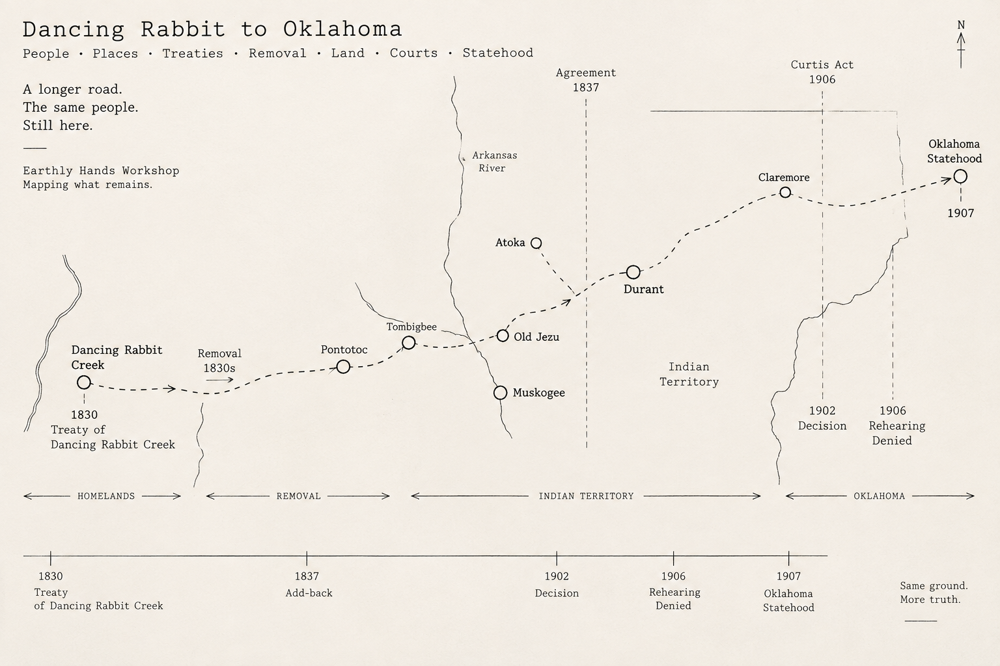

Dancing Rabbit to Oklahoma
A longer road. The same people. Still here.

Read across
People. Places. Treaties. Removal. Land. Court. Statehood.
Same ground. More truth.
Ground
Homelands, removal, Indian Territory, and Oklahoma can appear together without pretending they are one unchanged jurisdiction.
Time
The lower register holds sequence. Spacing is not distance, and visual nearness is not causation.
Family
The 1902 decision and the later rehearing denial can remain inside the larger historical passage without becoming the whole passage.
Stop
A line may end where the Workshop's knowledge ends. Blank ground is allowed to remain blank.
Boundary
This is visual-historical orientation, not a verified travel reconstruction. The line, spacing, and named intermediate places do not establish route geometry or prove that every administrative event occurred at the pictured location.
The terminus is Oklahoma statehood, 1907 — not a guessed city.
Passed through Mullion's hands · Line Commons · bounded public experiment